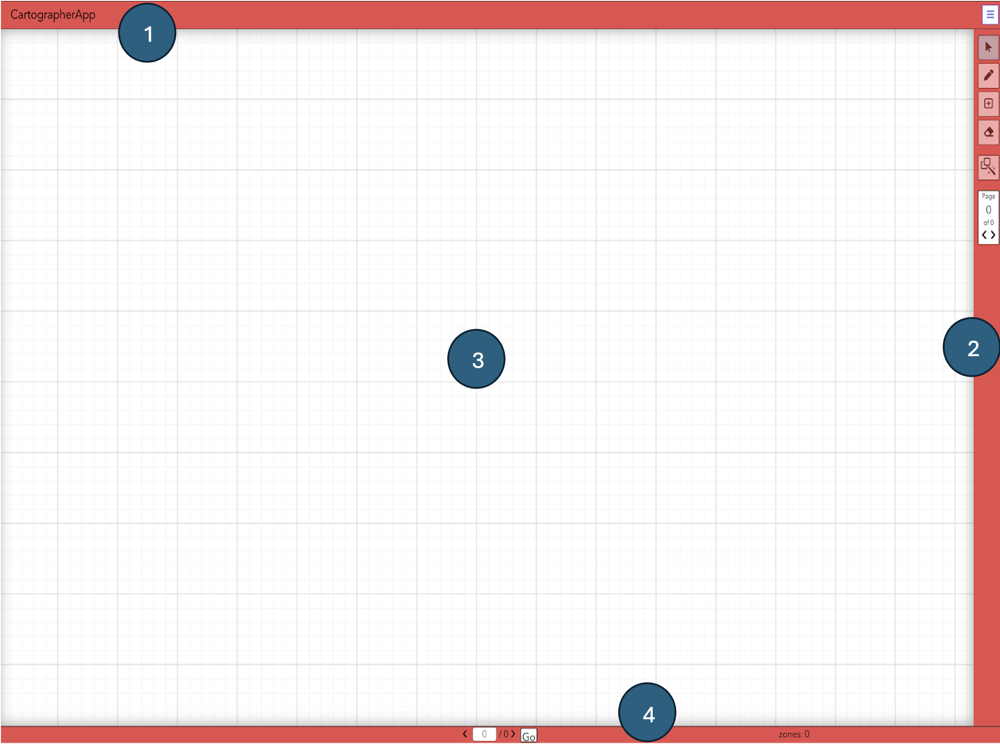
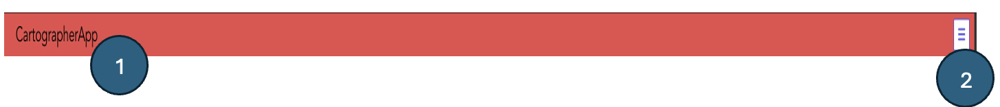
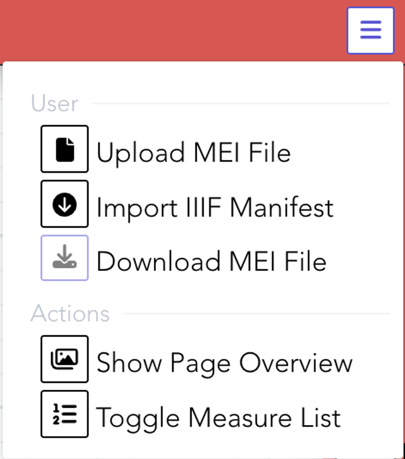
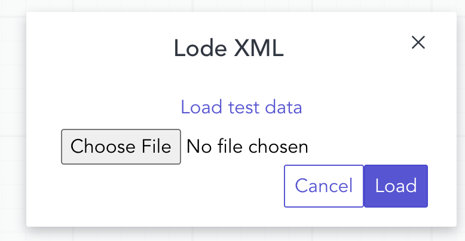
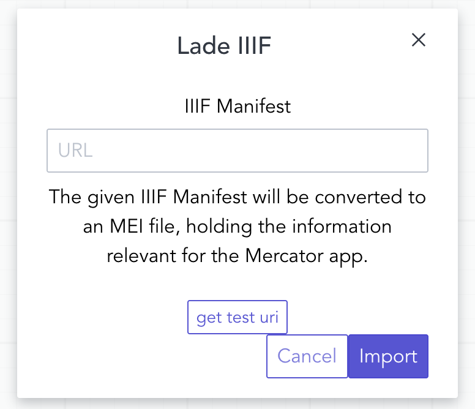
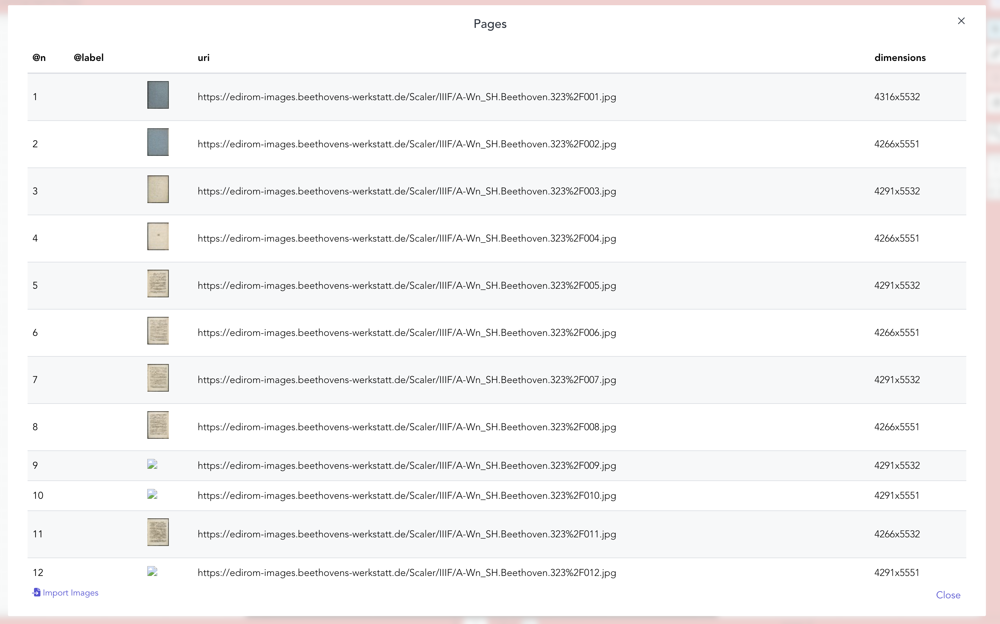
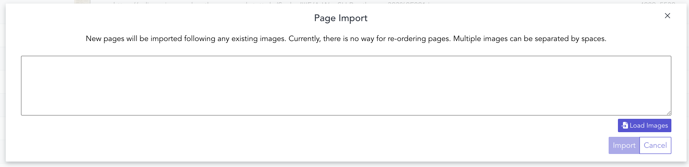
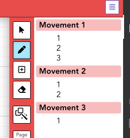

Introduction
TThe Cartographer App is used to provide placement information of zones of interest in (historical) documents. The first and foremost use case is the identification of bounding boxes of measures in music documents. It is a successor of the Vertaktoid, but other than that uses web technology and is thus platform independent. It optionally uses the Measure Detector for automatic recognition of measure positions, but allows manual correction of these results.
Important Tools and their Documentation
Important Tools and their Documentation Vectre, which is a VueJS version of Spectre CSS. See here
OpenSeadragon. See here
Installation
Clone the repository:
git clone https://github.com/Edirom/cartographer-app.gitcd cartographer-appTo Compile and hot-reloads for development
npm run serveTo Compile and minifies for production
npm run buildnpm run test:unitnpm run lintnpm run test:lintSee here To Deploying to a subdirectory with Docker
docker build dockercontainer docker run \
-e CLIENT_ID="your client id" \
-e CLIENT_SECRET= "your client secret"\
-e CALL_BACK= "your call back" \
-e VUE_APP_CALL_BACK=$CALL_BACK \
-e VUE_APP_PUBLIC_PATH="your subpath"
dockercontainer Window
The Cartographer App window consists of the following parts:
- Top bar with the title and a dropdown menu button (see number 1 in Image 1)
- Right sidebar with tools (see number 2 in Image 1)
- Main working area (see number 3 in Image 1)
- Bottom bar displaying status information about mdivs, page numbers, and zones (see number 4 in Image 1)

Header
In the Cartographer App, the header contains a title (see number 1 in Image 2) and a dropdown menu button (see number 2 in Image 2). Clicking the menu reveals buttons for uploading or downloading MEI files, and for loading IIIF image files from a server. Additionally, the header includes buttons to show the Page Overview and to toggle the Measure List.

Menu Bar
Clicking the dropdown menu in the header opens five options (see Image 3):

-
Upload MEI File: Opens a file dialog where you can select and upload a local MEI file (see figure 4).

Image 4: Upload mei file -
Import IIIF Manifest: Opens a dialog to enter the URL of a IIIF manifest to load image data from a server (see figure 5).

Image 5: import IIIF manifest - Download MEI File: Saves the current MEI file to your local machine.
-
Show Page Overview: Popups list of all pages with detailed information from an imported file (see figure 6). It also contains a button to copy and paste IIIF manifest (Import Images button) as depicted by image 7.

Image 6: Display list of images 
Image 7: Display list of images -
Toggle Measure List: Shows or hides the list of musical measures of the document next to the right toolbar (see figure 8).

Image 8: Tougle Measures